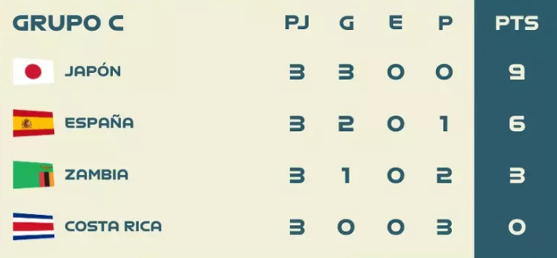

Tabla de posiciones
GRUPO A
Suecia y Noruega, clasificaron a octavos y fueron eliminadas.
Nueva Zelanda y Filipinas, eliminadas en fase de grupos.
GRUPO B
Australia y Nigeria se clasificaron a octavos
Canadá y República de Irlanda quedaron eliminadas en fase de grupos.
Nigeria fue eliminada en octavos.
Australia, ganó en octavos ante Dinamarca 2 a 0, luego en cuartos ante Francia por penales.
Australia fue eliminada en semifinales por Inglaterra
GRUPO C

Japón y España, clasificadas a octavos de final.
Zambia y Costa Rica, eliminadas en fase de grupos.
Japón, fue eliminada en octavos.
España, derrotó Suiza, luego a Paises Bajos en cuartos de final y a Suecia en seminfinales.
España se consagró campeona ante Inglzaterra con tan solo un tanto ante ninguno de las inglesas
GRUPO D
Inglaterra y Dinamarca, clasificadas a octavos.
RP China y Haití, eliminadas en fasse de grupos.
Dinamarca fue eliminada en octavos por Australia.
Inglaterra, llego a la final, tras conseguir la victoria ante, Nigeria y Colombia en octavos y cuartos.
Inglaterra consiguió el segundo puesto, tras perder ante España en la final
GRUPO E
Países Bajos y Estados Unidos, clasificadas como primera y segunda, respectivamente.
Portugal eliminada en fase de grupos.
Vietnam fue eliminada en fase grupos.
Estados Unidos y Paises Bajos, fueron ambas eliminadas en octavos de final
GRUPO F
Francia y Jamaica, clasificadas a octavos de final.
Panamá y Brasil, eliminadas en fase de grupos.
Jamaica fue eliminada en octavos.
Francia, se clasifico a cuartos y elimiada por Australia.
GRUPO G
Suecia y Sudáfrica, clasificadas a octavos.
Italia y Argentina, eliminadas en fase de grupos.
Sudafrica fue eliminada por Colombia en octavos
Suecia llego a la semifinal, perdió ante España 2 a 1, consiguiendo así, el tercer puesto
GRUPO H
Colombia y Marruecos, clasificadas a octavos.
Alemania y República de Corea, eliminadas en fase de grupos.
Marruecos fue derrotada por Francia en octavos, quedando así eliminada.
Colombai llego a cuartos de final, donde fue eliminada por Inglaterra